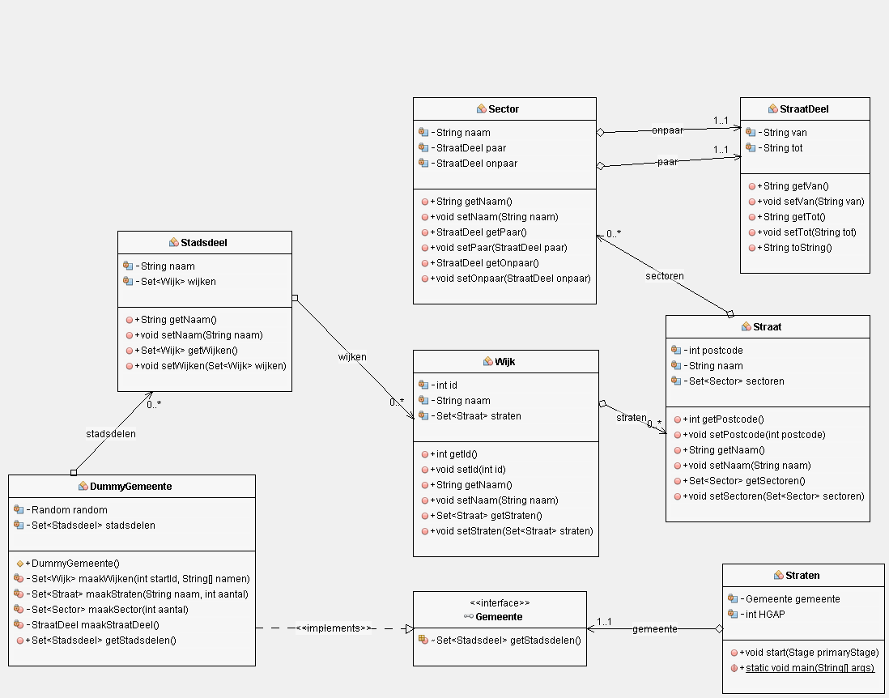
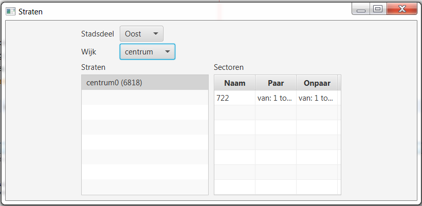
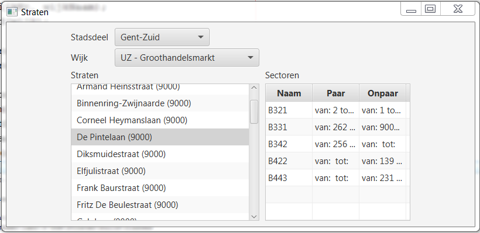
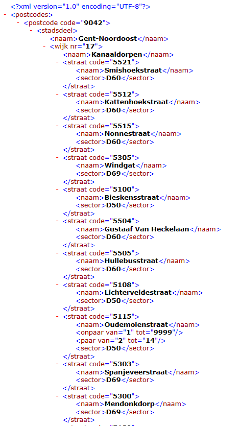

In dit labo gebruiken we een XML-bestand met de straten van Stad Gent. We vonden dit bestand terug op het Open Data Portaal data.gent.be van de stad Gent, maar momenteel staat deze informatie daar enkel nog in json- en csv-formaat. Vertrek daarom van het bestand stratenInGent.xml dat we voor jullie bewaarden.
De GUI is reeds geschreven en heeft voorlopig een dummyobject als datalaag. Om de structuur van dit object (en de gebruikte klassen) sneller te doorgronden, gebruik je onderstaand UML-diagram. 
Vervang het dummyobject door een object dat zijn gegevens uit het XML-bestand stratenInGent.xml haalt.
De klasse van dit object is reeds deels geschreven: XMLGemeente.
Bestudeer de code die reeds gegeven is; je zal iets gelijkaardigs nodig hebben in opdracht 2 van dit labo.
Vul nu aan waar gevraagd: gebruik het DOM-principe om het XML-bestand volledig in te lezen.

Je merkt dat de stadsdelen, wijken en straten niet alfabetisch gesorteerd zijn. Hoe zou je dat kunnen oplossen?

Schrijf een programma dat het gekende XML-bestand inleest aan de hand van de DOM-API in Java. (Baseer je op vorige opdracht waar nuttig.) Daarna maakt dit programma een nieuw DOM-object aan voor het nieuwe XML-bestand, dat dan met behulp van de Transform-API weggeschreven wordt naar dat nieuwe bestand. Het resultaat (of toch de start daarvan) vind je hieronder.
